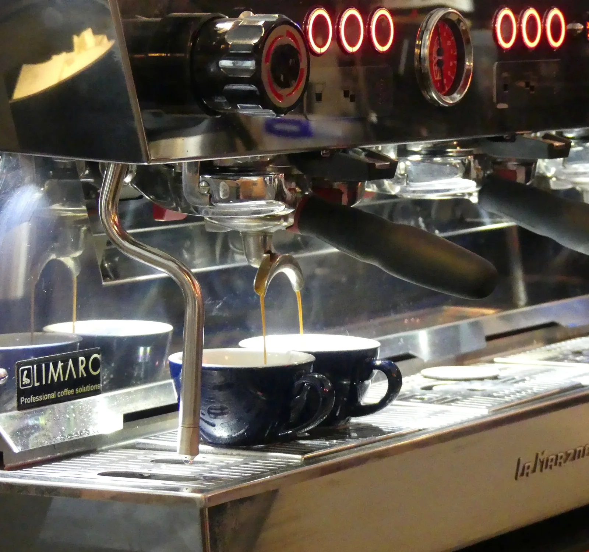
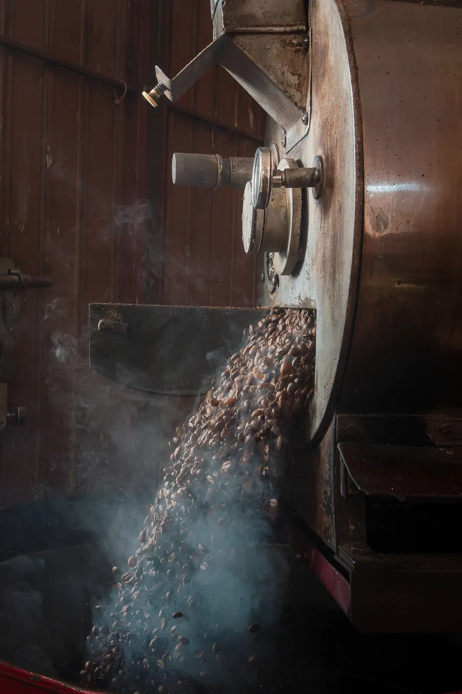
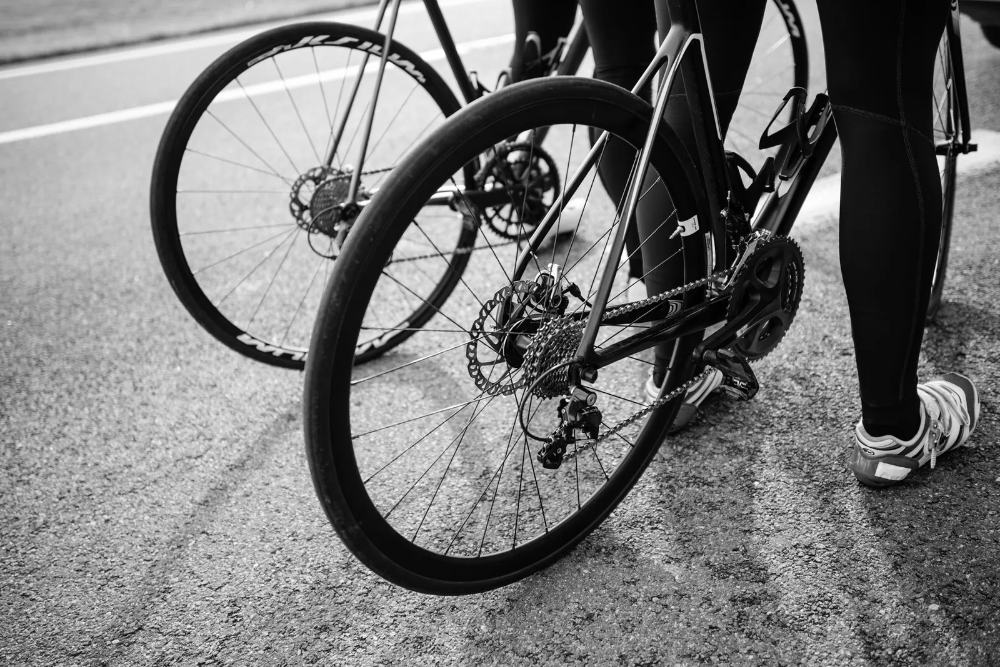

Koffie zoals ze hoort, vers gebrand.
Midden in de Naamsestraat schenken we koffie van eigen bonen, met elke dag andere taart erbij. Kom studeren, bijpraten of uitrusten na een rit. We houden van koffie, van fietsen en van het goeie leven.


Bonen uit eigen brander
De koffie in je kopje komt van Naft Coffee Roasters, onze eigen branderij. We branden niet apart voor espresso of filter. We zoeken per boon naar de smaak die er het beste in zit, zodat ze in allebei tot haar recht komt. En ja, ze zijn fairtrade.
Acht jaar stond Yassin achter onze toog. Nu staat hij aan de brander.Onze vaste barista leidt sinds kort de branderij van Naft.

Fietsers welkomEen stop halverwege de rit
Fietsen zit in ons bloed. Clubs en vrienden vertrekken hier, stoppen hier of eindigen hier met een koffie. Zo reden we al een woensdagse social ride met Heathland Gravel, met Pepas Frituur als buren voor achteraf.
Gasten aan het woord
"My favorite coffee bar in the whole of Leuven! Noir is not just a trend or a hype, they (the owners and staff) know so much about coffee, and take great pride in what they are serving."
"Our first time here, and we instantly fell in love with this place! The interior is both unique and cozy, the atmosphere warm and welcoming."
"My girlfriend got an iced caramel latte with oat milk and it was probably the best coffee we've had in Leuven to date."

Tot straks?
Je vindt ons in de Naamsestraat, een paar minuten van de Grote Markt. Ook op zondag staan we voor je klaar.